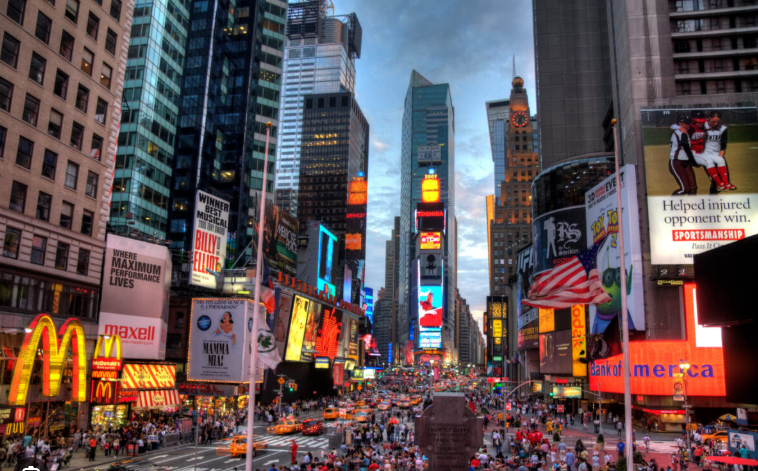

Viajar não é escpar da vida, mas fazer com que a vida não escape de nós.
Por: Mirella Vaz
Hoje conclui a primeira etapa do meu Blog Digital sobre viagens, foi díficil mais eu consegui.
Por que vijar muda a forma como enxergamos o mundo?

Por: Mirella Vaz
Hoje conclui a primeira etapa do meu Blog Digital sobre viagens, foi díficil mais eu consegui.